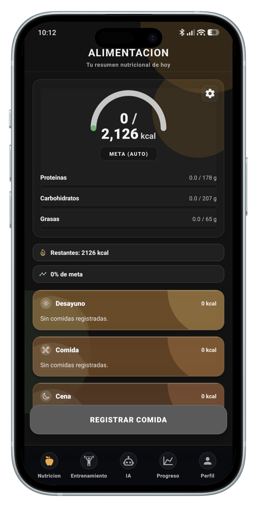

SOBRE BEATME
No somos una app más. Somos un sistema para sostener hábitos.
BeatMe nace para resolver un problema real: mucha gente sabe que debe hacer, pero no logra mantenerlo. Diseñamos una experiencia que une entrenamiento, nutrición y seguimiento para convertir intenciones en consistencia.
QUIÉNES SOMOS
Un equipo enfocado en comportamiento, salud y producto digital.
Somos estudiantes y creadores construyendo una plataforma que ayude a las personas a mejorar su salud sin depender de motivación momentánea.
Qué hacemos
Traducimos principios de entrenamiento y nutrición en una experiencia simple: planear, registrar, revisar y ajustar.
Para quién
Para personas que quieren entrenar y comer mejor, pero necesitan estructura, seguimiento y decisiones más claras.
Cómo pensamos
Menos ruido, más acción. Menos promesas vacías, más progreso medible en el día a día.
MISIÓN, VISIÓN Y OBJETIVO
Queremos que cuidar tu salud sea sostenible, no temporal.
Misión
Ayudar a cada usuario a construir hábitos de entrenamiento y nutrición con herramientas simples, útiles y accionables.
Visión
Ser la plataforma de referencia para personas que quieren progreso real, medible y sostenido en su bienestar integral.
Objetivo principal
Reducir abandono de rutinas y planes alimenticios mediante estructura diaria, acompañamiento inteligente y seguimiento visual.
QUÉ OFRECE BEATME
Una sola plataforma para entrenar, comer y evaluar tu avance.
Entrenamiento estructurado
Rutinas, sesiones, series y progreso por ejercicio en contexto real.
Nutrición útil
Registro simple de comidas, macros y metas con enfoque práctico.
Asistente IA
Soporte en español para dudas sobre alimentación, técnica y estrategia.
Progreso completo
Visualizaciones diarias y semanales para decidir mejor que ajustar.
NUESTRA RUTA
Cómo estamos construyendo BeatMe
-
01
Detectamos el problema de abandono en planes de salud personales.
-
02
Diseñamos una experiencia centrada en constancia y simplicidad.
-
03
Integramos entrenamiento, nutrición, progreso e IA en un flujo único.
-
04
Iteramos con feedback real para mejorar claridad, usabilidad y valor.
EQUIPO
Personas construyendo herramientas para personas.
Producto
Estrategia y experiencia
Definimos que construir primero para resolver necesidades reales del usuario.
Desarrollo
App y plataforma
Convertimos ideas en funcionalidades robustas, escalables y fáciles de usar.
Salud y contenido
Entrenamiento y nutrición
Aterrizamos recomendaciones prácticas para que la app sea útil en la vida diaria.
TRABAJEMOS JUNTOS
Queremos llevar BeatMe al siguiente nivel con feedback real.
Si quieres colaborar, probar nuevas funciones o sumar ideas, estamos listos para escucharte.